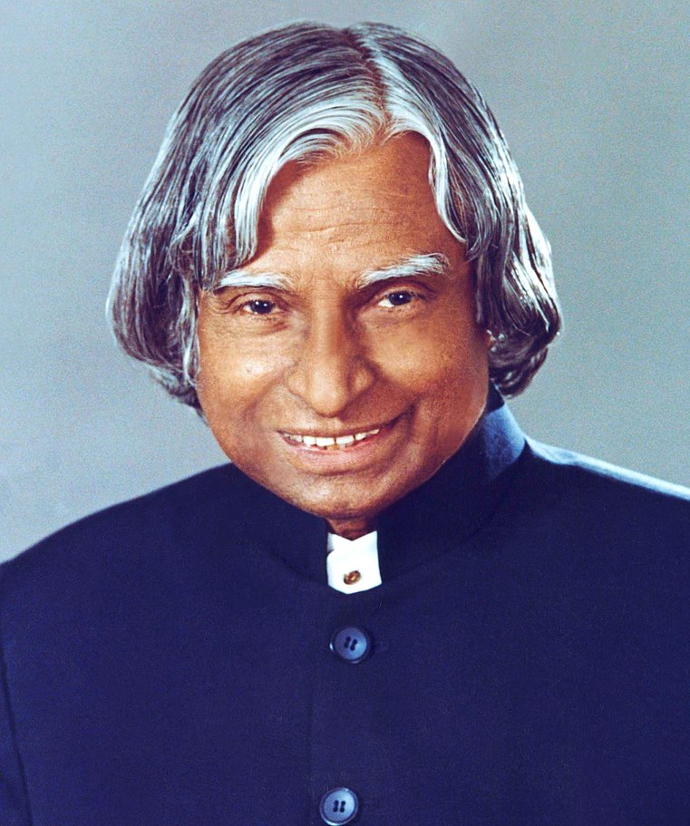

Introduction
A.P.J. Abdul Kalam, in full Avul Pakir Jainulabdeen Abdul Kalam, (born October 15, 1931, Rameswaram, India—died July 27, 2015, Shillong), Indian scientist and politician who played a leading role in the development of India's missile and nuclear weapons programs. He was president of India from 2002 to 2007.
Achievements
- India’s First SLV (Satellite Launch Vehicle)
- Ballistic missiles project
- Nuclear Tests in Pokhran
- Kalam-Raju Stent (Universal Healthcare Plan)
- Kalam-Raju tablet
books
- Ignited Minds
- Wings of Fire
- India 2020
- Turning Points
- Forge Your Future
- You are Born to Blossom
Inspiration
“You have to dream before your dreams can come true.” It is one of the most famous APJ Abdul Kalam quotes. Always remember that everything is possible if you dare. The only thing that can stop you is your fear of failure.